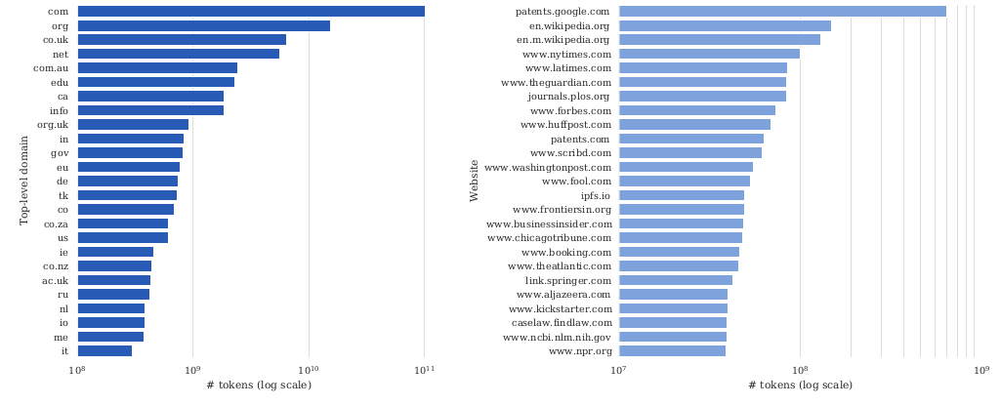
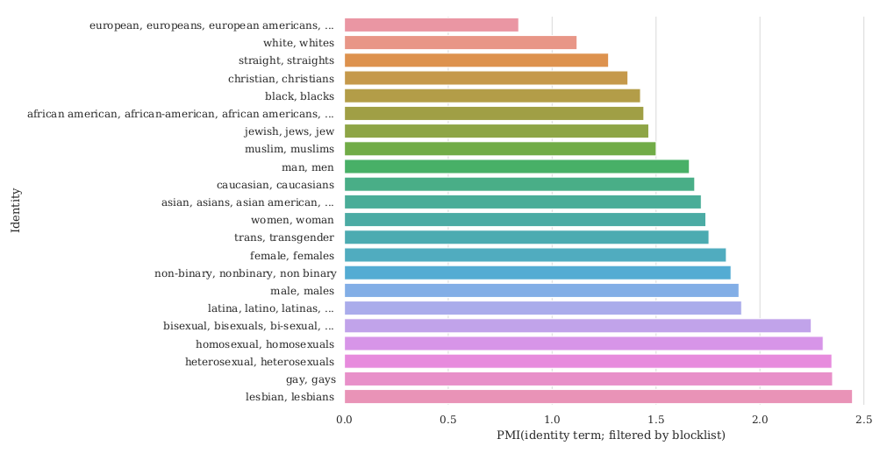
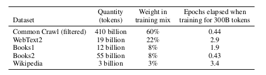
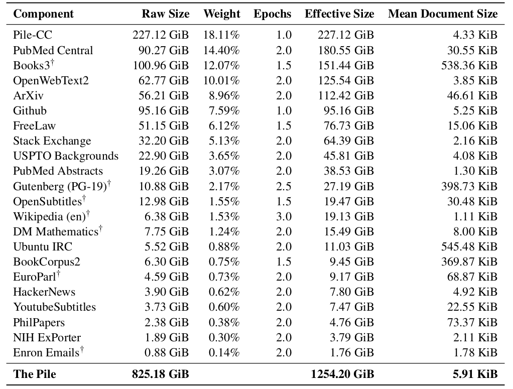
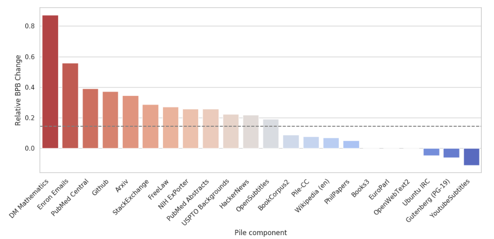
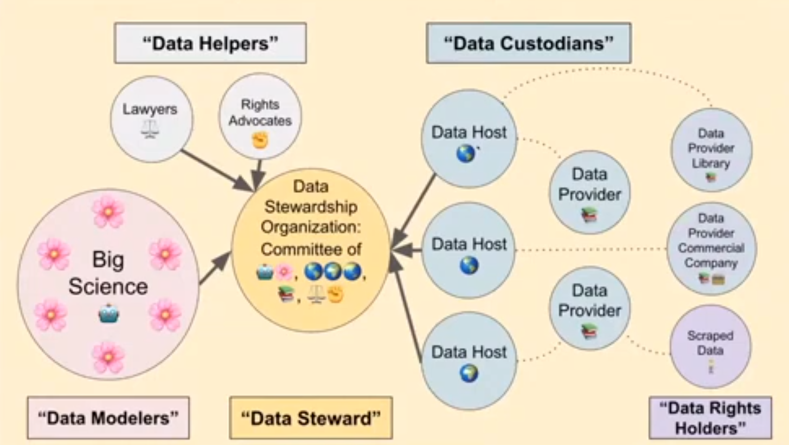

So far, we’ve talked about the behavior (capabilities and harms) of large language models. Now, we peel open the first layer of the onion and start discussing how these models are constructed. The starting point of any machine learning approach is training data, so this is where we’ll start.
Aside: Normally in machine learning, the training data and the test (evaluation) data are similar or at least of the same type. But for large language models, the training data is just “raw text”.
In the rest of the lecture, we’ll talk about:
Data behind large language models
Recall that large language models are trained on “raw text”. To be highly capable (e.g., have linguistic and world knowledge), this text should span a broad range of domains, genres, languages, etc.
A natural place (but not the only place) to look for such text is the web, so this will be a major focus of our attention. The web is absolutely huge. As a lower bound, the Google search index is 100 petabytes (reference). The actual web is likely even larger, and the Deep Web is even larger than that.
It is worth noting that private datasets that reside in big companies are even larger than what’s available publicly. For example, WalMart generates 2.5 petabytes of data each hour!
Common Crawl is a nonprofit organization that crawls the web and provides snapshots that are free to the public. Because of its convenience, it has been a standard source of data to train many models such as T5, GPT-3, and Gopher. The April 2021 snapshot of Common Crawl has 320 terabytes of data, which is a few orders of magnitude smaller than the Google index.
Representation. Despite the richness of web data, it has been noted in Bender et al, 2021 that:
- Despite the size, large-scale data still has uneven representation over the population.
- Internet data overrepresents younger users from developed countries.
- GPT-2’s training data is based on Reddit, which according to Pew Internet Research’s 2016 survey, 67% of Reddit users in the US are men, 64% between ages 18 and 29.
- 8.8-15% of Wikipedians are female.
- Harassment on Internet could turn away certain people (trans, queer, neurodivergent people).
- Filtering “bad words” could further marginalize certain populations (e.g., LGBT+).
Takeaway: it is crucial to understand and document the composition of the datasets used to train large language models.
WebText and OpenWebText
WebText. The WebText dataset was used to train GPT-2.
- Goal: obtain diverse but high-quality dataset.
- Previous work:
- Datasets were trained on news, Wikipedia, or fiction.
- Common Crawl contains a lot of junk (gibberish, boilerplate text).
- Trinh & Le, 2018 selected a tiny subset of Common Crawl based on n-gram overlap with the target task.
- Process for creating WebText:
- Scraped all outbound links that received at least 3 karma (upvotes).
- Filtered out Wikipedia to be able to evaluate on Wikipedia-based benchmarks.
- End result is 40 GB of text.
OpenWebText. WebText was not released by OpenAI, but it was replicated (in spirit) by the OpenWebText dataset.
- Extracted all the URLs from the Reddit submissions dataset.
- Used Facebook’s fastText to filter out non-English.
- Removed near duplicates.
- End result is 38 GB of text.
Toxicity analysis. Gehman et al. 2020, the RealToxicityPrompts paper, analyzed these two datasets and found:
- 2.1% of OpenWebText has toxicity score >= 50%
- 4.3% of WebText (from OpenAI) has toxicity score >= 50%
- News reliability correlates negatively with toxicity (Spearman \(\rho = -0.35\))
- 3% of OpenWebText comes from banned or quarantined subreddits, e.g., /r/The_Donald and /r/WhiteRights
Colossal Clean Crawled Corpus
The Colossal Clean Crawled Corpus (C4) is a larger was created to train the T5 model.
- Started with April 2019 snapshot of Common Crawl (1.4 trillion tokens)
- Removed “bad words”
- Removed code (“{“)
- langdetect to filter out non-English text
- Resulted in 806 GB of text (156 billion tokens)
Analysis. Dodge et al. 2021 performed a thorough analysis of the C4 dataset.
Documentation levels:
- Metadata: provenance, utterance data
- Included data: machine or human authored, social biases, data contamination
- Excluded data: medical or health data, demographic identities
Note: Raffel et al. 2020 only provided scripts to recreate; cost thousands of dollars just to run these scripts.

- A surprising amount of data from patents.google.com
- 65% pages in the Internet Archive; out of those, 92% pages written in the last decade
- 51.3% pages are hosted in the United States; fewer from India even though lots of English speakers there
- Some text from patents.google.com are automatically created, and thus have systematic errors:
- Filed in a foreign country’s official language (e.g., Japanese) is automatically translated into English
- Automatically generated from optical character recognition (OCR)
Benchmark data contamination.
- When we are evaluating the capabilities of large language models using benchmark data (e.g., question-answer pairs), it makes a difference whether the benchmark data appears in the training data of the language model. If so, then the benchmark performance will be biased up.
- Normally, in machine learning, data hygiene (keeping the training data separate from the test) is relatively easy, but in the case of large language models, both the training data and benchmark data are derived from the Internet, it can be difficult to a priori guarantee their separation.
Example from the XSum summarization dataset:
Input: The 48-year-old former Arsenal goalkeeper played for the Royals for four years. He was appointed youth academy director in 2000 and has been director of football since 2003. A West Brom statement said: “He played a key role in the Championship club twice winning promotion to the Premier League in 2006 and 2012.
Output: West Brom have appointed Nicky Hammond as technical director, ending his 20-year association with Reading.
There are two types of contamination:
- Input-and-output contamination: both the input and output appear in the training data. Varies from 1.87% to 24.88% (XSum is 15.49%).
- Input contamination: the input appears in the training data. Varies from 1.8% to 53.6% (QNLI, which is derived from Wikipedia).
Note that contamination is not due to hosting datasets (as they are usually stored in a JSON file, not as a webpage).
The dataset could also be responsible for various harms:
- Representational harms
- They look at co-occurrence with ethnicity terms (e.g., Jewish) and sentiment-bearing words (e.g., successful).
- Jewish has 73.2% positive sentiment, Arab has 65.7% positive (7.5% difference).
- Variation across sites (New York Times had a 4.5% difference, Al Jazeera had 0% difference).
- Allocational harms
- Recall C4 is a filtered version of Common Crawl (only about 10%).
- Mentions of sexual orientations (e.g., lesbian, gay) more likely to be filtered out; of those filtered out, non-trivial fraction are non-offensive (e.g., 22% and 36%).
- Certain dialects are more likely to be filtered (AAE: 42%, Hispanic-aligned English: 32%) than others (White American English: 6.2%)

GPT-3 dataset

- Selected subset of Common Crawl that’s similar to a reference dataset (WebText).
- Downloaded 41 shards of Common Crawl (2016-2019).
- Trained a binary classifier to predict WebText versus Common Crawl.
- Sampled (kept) a document with higher probability if classifier deems it more similar to WebText.
- Performed fuzzy deduplication (detect 13-gram overlap, remove window or documents if occurred in <10 training documents), removing data from benchmark datasets.
- Expanded the diversity of the data sources (WebText2, Books1, Books2, Wikipedia).
- During training, Common Crawl is downsampled (Common Crawl is 82% of the dataset, but contributes only 60%).
The Pile
- While a web crawl is a natural place to look for broad data, it’s not the only strategy, and GPT-3 already hinted that it might be productive to look at other sources of higher quality.
- EleutherAI (a nonprofit organization committed to building open language models), pushed this idea even farther.
- They released The Pile, a dataset for language modeling, where the key idea is to source it from smaller high-quality sources (academic + professional sources).
Data composition.
- 825 GB English text
- 22 high-quality datasets

Compare:
- GPT-2Pile (1.5B parameters) trained on The Pile
- GPT-3 (175B parameters) trained on GPT-3’s dataset.
- Normalize so that the difference for OpenWebText2 is 0.

Takeaway: The Pile contains a lot of information that’s not well covered by GPT-3’s dataset.
They also performed analysis of pejorative content, gender/religion biases. The findings are qualitatively similar to previous work.
Summary
- The total amount of data out there (web, private data) is massive.
- Training on “all of it” (even Common Crawl) doesn’t work well (not effective use of compute).
- Filtering / curation (OpenWebText, C4, GPT-3 dataset) is needed, but can result in biases.
- Curating non-web high-quality datasets is promising (The Pile).
- Important to carefully document and inspect these datasets.
Documentation for datasets
We now step back from the specifics of language modeling datasets and discuss general principles around data.
- It has been long noted that documentation is important, but within the machine learning community, it has been a fairly ad-hoc process.
- Examples from other fields:
- Electronics industry has a well-established protocol where every component has a datasheet with operating characteristics, test results, recommended and usage.
- Nutrition labels: The FDA mandates that food be labeled with their nutrition content.
- Datasheets for datasets (Gebru et al., 2018) is an influential paper that provides community norms around documentation.
- Data statements (Bender & Friedman, 2018) is related framework that is more tailored to language datasets.
- The emphasis is on transparency.
Two purposes:
- Dataset creators: reflect on decisions, potential harms (e.g., social biases) when creating the dataset.
- Dataset consumers: know when the dataset can and can’t be used.
Dataset lifecycle (a sample of the questions from each category are provided below):
- Motivation
- For what purpose was the dataset created?
- Who created this dataset?
- Who funded the creation of the dataset?
- Composition
- What do the instances that comprise the dataset represent (e.g., documents, photos, people, countries)?
- Is any information missing from individual instances?
- Does the dataset contain data that might be considered confidential?
- Collection process
- How was the data associated with each instance acquired?
- Who was involved in the data collection process (e.g., students, crowdworkers, contractors) and how were they compensated (e.g., how much were crowdworkers paid)?
- Were any ethical review processes conducted (e.g., by an institutional review board)?
- Preprocessing/cleaning/labeling
- Was any preprocessing/cleaning/labeling of the data done?
- Is the software that was used to preprocess/clean/label the data available?
- Uses
- Has the dataset been used for any tasks already?
- Are there tasks for which the dataset should not be used?
- Distribution
- How will the dataset will be distributed?
- Have any third parties imposed IP-based or other restrictions on the data associated with the instances?
- Maintenance
- Who will be supporting/hosting/maintaining the dataset?
- Will the dataset be updated (e.g., to correct labeling errors, add new instances, delete instances)?
Data statements. The data statements work is specialized to NLP datasets, and covers other aspects:
- Curation rationale (what’s included?)
- Language variety (schema)
- Speaker demographic (age, gender, race/ethnicity, etc.)
- Annotator demographic (age, gender, race/ethnicity, etc.)
As an example, let’s look at the datasheet for The Pile.
Data ecosystems
So far, we have mostly focused on the analysis of existing datasets (for large language models) as well as documentation. But data is a broad concept which can be studied from many other angles.
Data management: In machine learning research, we tend to think of datasets as fixed objects that you collect and you feed into a training algorithm. In the the databases community, there is whole subfield thinking about the ecosystem in which data comes to be and is used, and this is particularly relevant in industry.
- Some issues are discussed in the data section of the foundation models report.
- Data governance talks about how an organization can create data, maintain its quality and security.
- The BigScience project (initiated by Hugging Face) aims to collect a large multilingual dataset as well as train a large language model. The BigScience data governance working group has been developing a framework to responsibly curate quality data sources, in contrast to the indiscriminate scraping of the web.

Data dignity. This is a concept that originated out of Microsoft and RadicalxChange that seeks to think about the nature of data.
- People create data.
- Because people live in social environments, data also is a property not of individuals, but of groups of people. Examples: emails, genetic data.
- Individually, data does not have value, but collectively, it has a lot of value.
- Related: Data Shapley is a framework for ascribing value to a given data point in the context of machine learning.
- Status quo: people give away their data for free, and big corporations derive tons of value and power from it.
- Example: Alice and Bob are both writers. Alice provide examples of writing for free. This can be used to train a language model that can replace Bob.
- Think about data as labor rather than property rights.
- Data privacy works on the individual level, and doesn’t work.
- Proposal: data coalitions, which are intermediate organizations that represent between data producers and data buyers (think about collective bargaining).
- Read this article for more details.
Further reading
Documentation for datasets:
- Datasheets for datasets. Timnit Gebru, Jamie H. Morgenstern, Briana Vecchione, Jennifer Wortman Vaughan, H. Wallach, Hal Daumé, Kate Crawford. Communications of the ACM 2018.
- Data Statements for Natural Language Processing: Toward Mitigating System Bias and Enabling Better Science. Emily M. Bender and Batya Friedman. ACL 2018.
- Model Cards for Model Reporting. Margaret Mitchell, Simone Wu, Andrew Zaldivar, P. Barnes, Lucy Vasserman, B. Hutchinson, Elena Spitzer, Inioluwa Deborah Raji, Timnit Gebru. FAT 2018.
Datasets:
- CommonCrawl
- OpenWebText Similar to WebText, used to train GPT-2.
- Exploring the Limits of Transfer Learning with a Unified Text-to-Text Transformer. Colin Raffel, Noam M. Shazeer, Adam Roberts, Katherine Lee, Sharan Narang, Michael Matena, Yanqi Zhou, W. Li, Peter J. Liu. J. Mach. Learn. Res. 2019. Introduces Clossal Clean Crawled Corpus (C4) and the T5 model.
- CCNet: Extracting High Quality Monolingual Datasets from Web Crawl Data. Guillaume Wenzek, Marie-Anne Lachaux, A. Conneau, Vishrav Chaudhary, Francisco Guzm’an, Armand Joulin, Edouard Grave. LREC 2019. Introduces CCNet.
- The Pile: An 800GB Dataset of Diverse Text for Language Modeling. Leo Gao, Stella Rose Biderman, Sid Black, Laurence Golding, Travis Hoppe, Charles Foster, Jason Phang, Horace He, Anish Thite, Noa Nabeshima, Shawn Presser, Connor Leahy. 2020. Introduces The Pile. Introduces The Pile, used to train GPT-J.
- Unsupervised Cross-lingual Representation Learning at Scale. A. Conneau, Kartikay Khandelwal, Naman Goyal, Vishrav Chaudhary, Guillaume Wenzek, Francisco Guzmán, Edouard Grave, Myle Ott, Luke Zettlemoyer, Veselin Stoyanov. ACL 2019. Introduces cleaned versions of CommonCrawl corpus on 100 datasets, used to train XLM-R.
Analysis of datasets:
- Documenting Large Webtext Corpora: A Case Study on the Colossal Clean Crawled Corpus. Jesse Dodge, Ana Marasović, Gabriel Ilharco, Dirk Groeneveld, Margaret Mitchell, Matt Gardner. EMNLP 2021.
- Quality at a Glance: An Audit of Web-Crawled Multilingual Datasets. Isaac Caswell, Julia Kreutzer, Lisa Wang, Ahsan Wahab, D. Esch, Nasanbayar Ulzii-Orshikh, A. Tapo, Nishant Subramani, A. Sokolov, Claytone Sikasote, Monang Setyawan, S. Sarin, Sokhar Samb, B. Sagot, Clara Rivera, Annette Rios Gonzales, Isabel Papadimitriou, Salomey Osei, Pedro Ortiz Suarez, Iroro Orife, Kelechi Ogueji, Rubungo Andre Niyongabo, Toan Q. Nguyen, Mathias Muller, A. Muller, S. Muhammad, N. Muhammad, Ayanda Mnyakeni, Jamshidbek Mirzakhalov, Tapiwanashe Matangira, Colin Leong, Nze Lawson, Sneha Kudugunta, Yacine Jernite, M. Jenny, Orhan Firat, Bonaventure F. P. Dossou, Sakhile Dlamini, N. D. Silva, Sakine cCabuk Balli, Stella Rose Biderman, A. Battisti, Ahmed Baruwa, Ankur Bapna, P. Baljekar, Israel Abebe Azime, A. Awokoya, Duygu Ataman, Orevaoghene Ahia, Oghenefego Ahia, Sweta Agrawal, Mofetoluwa Adeyemi. 2021.
Filtering datasets:
- An Empirical Exploration in Quality Filtering of Text Data. Leo Gao. 2021.
- Deduplicating Training Data Makes Language Models Better. Katherine Lee, Daphne Ippolito, Andrew Nystrom, Chiyuan Zhang, D. Eck, Chris Callison-Burch, Nicholas Carlini. 2021.
Data ecosystems:
- Foundation models report (data section)
- BigScience data governance working group
- Data Shapley: Equitable Valuation of Data for Machine Learning. Amirata Ghorbani, James Y. Zou. ICML 2019.
- Data Freedom Act